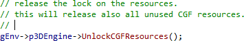
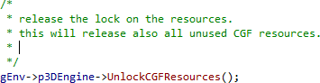

Auto-Extend Multi-Line Comments
Press Enter in a multi-line comment and Visual Assist extends the comment by inserting a comment token on the next line, at the correct indent level.

Line- and block-style comments are supported.

Enable the feature in the options dialog for Visual Assist.
Learn more.